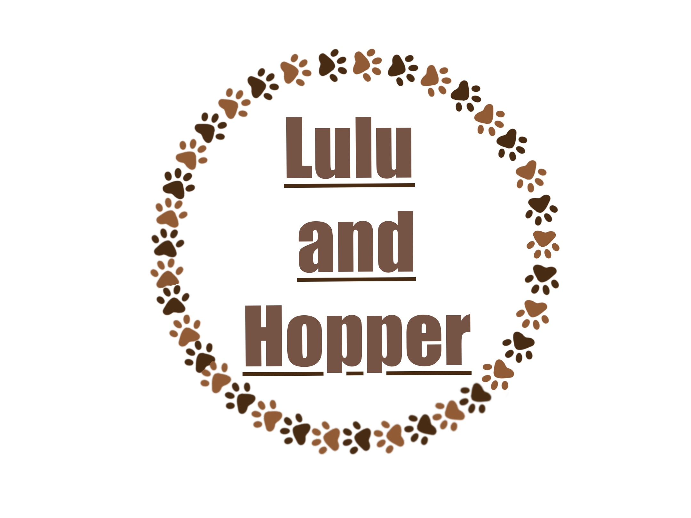

About us
WELCOME DUCHOUND LOVERS OR DOG LOVERS IN GENERAL
This is a creative website about main characters Duchound Lulu and Hopper.
It's all about transfering our creative imagination onto products,which are relatable to everyone.
They are suitable for adults and children.
Each drowing is digitaly drawn withlots of love.
Mugs are PREMIUM FINE CHINA quality which makes mugs even more irresistible.